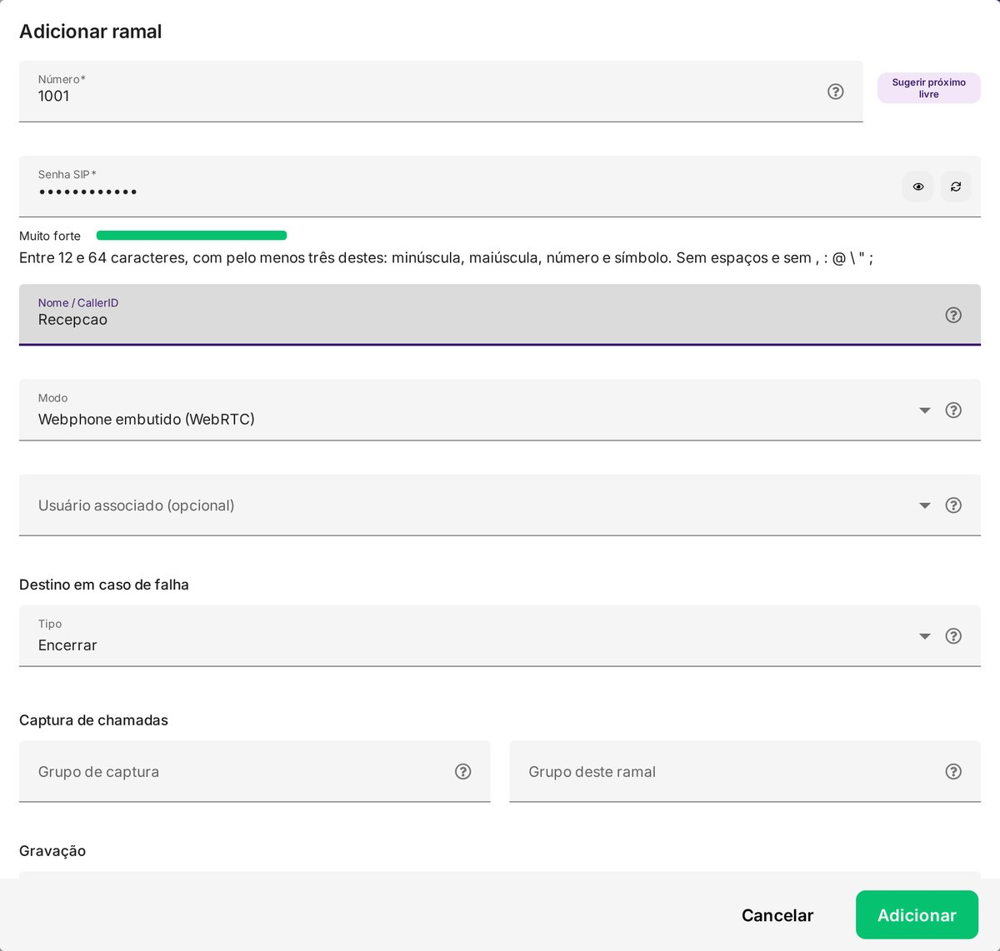
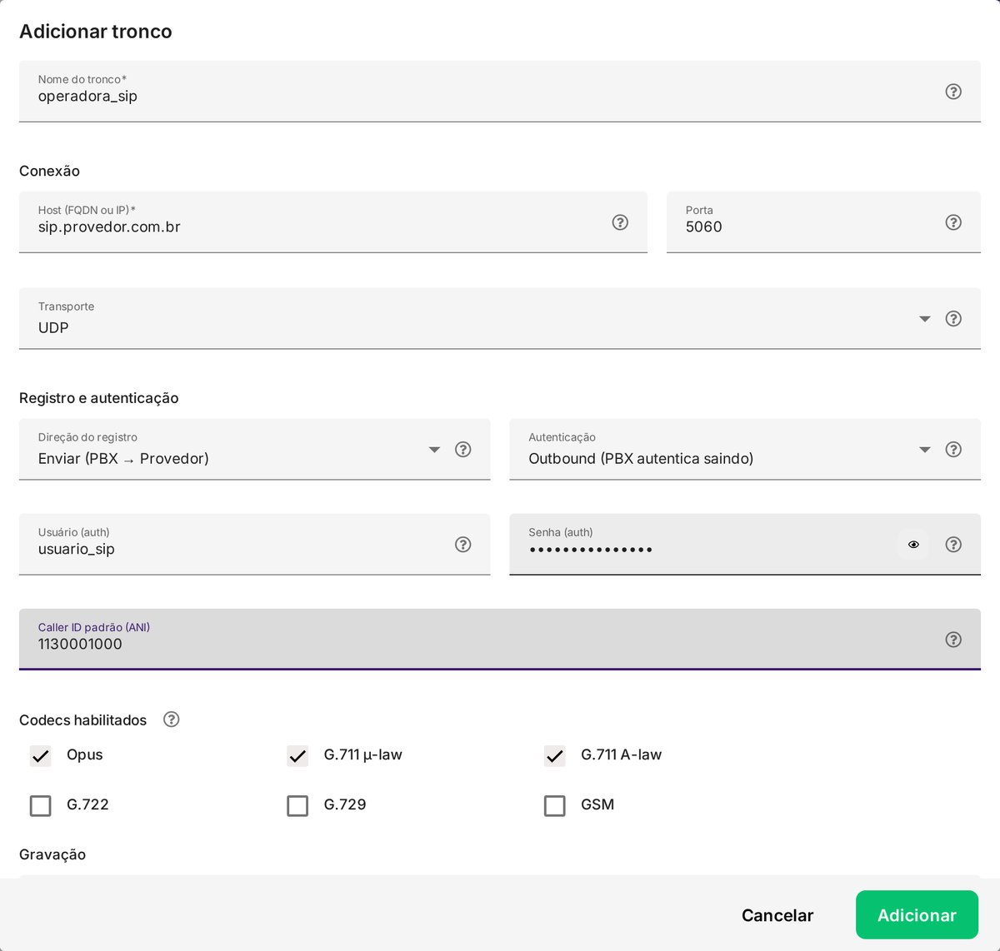
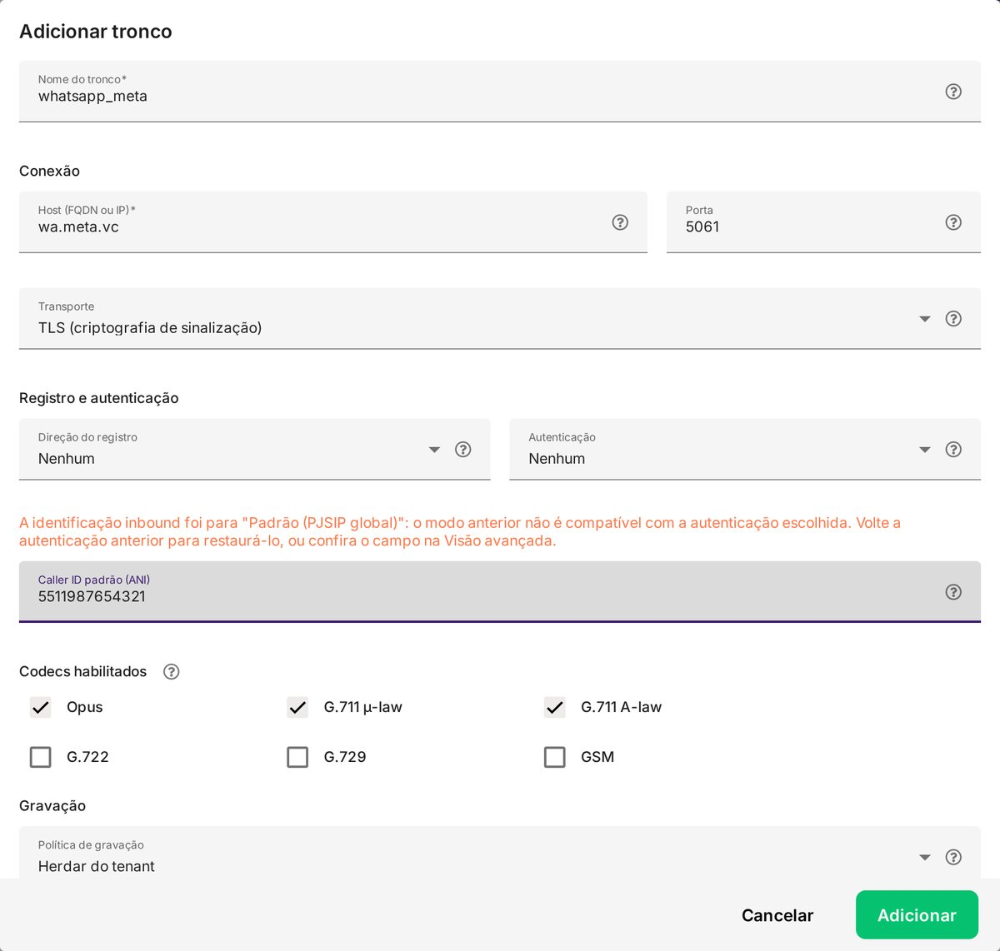
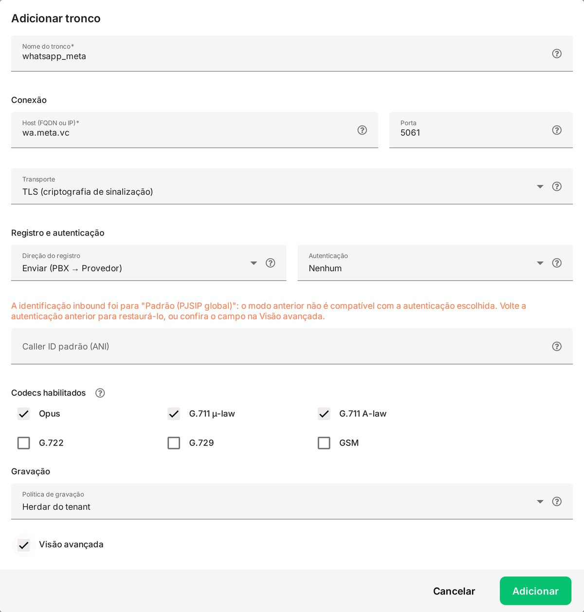
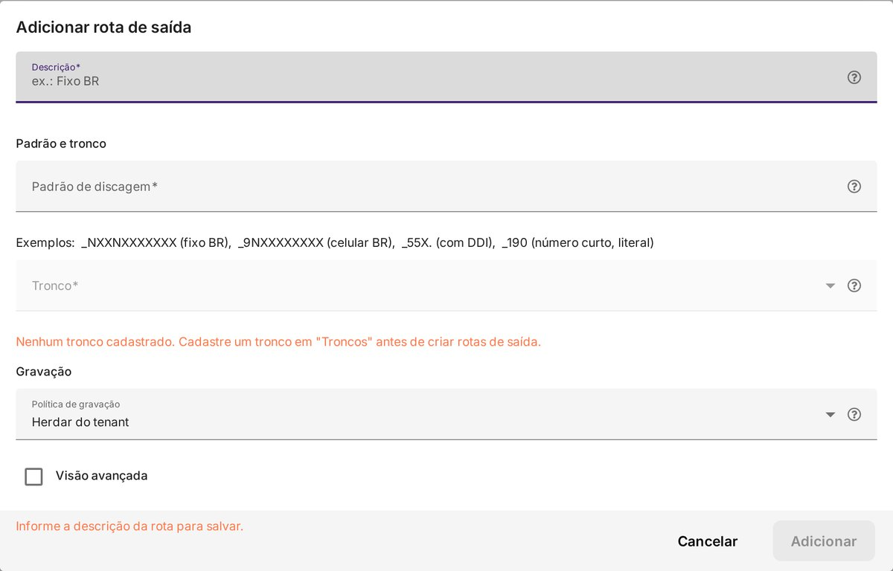
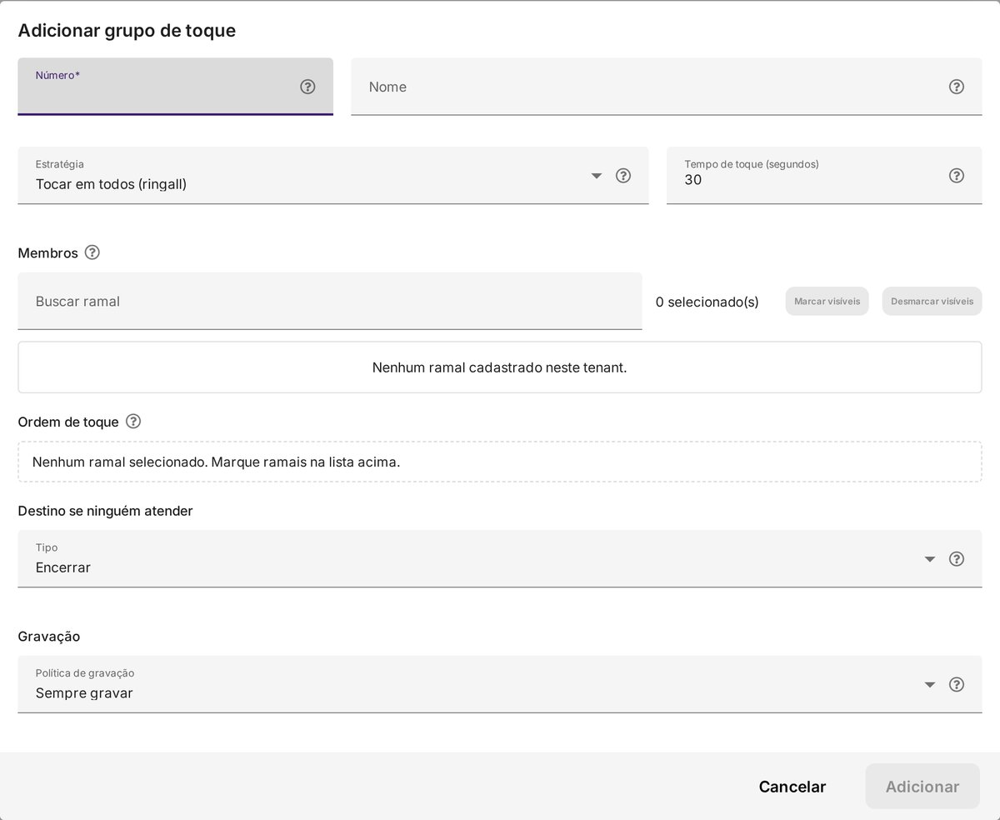
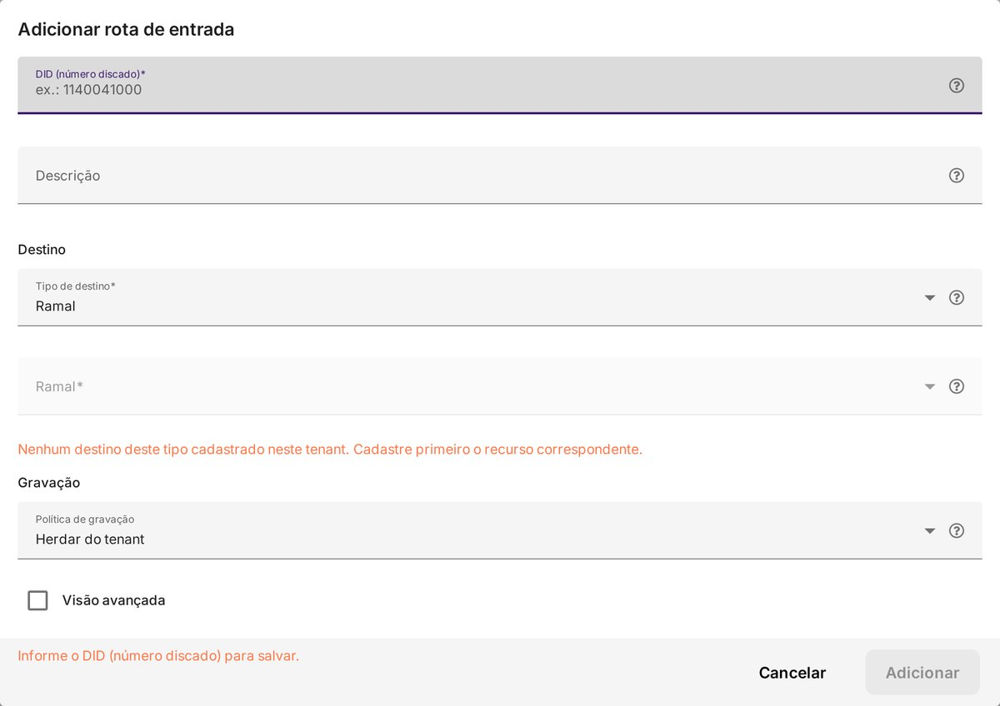
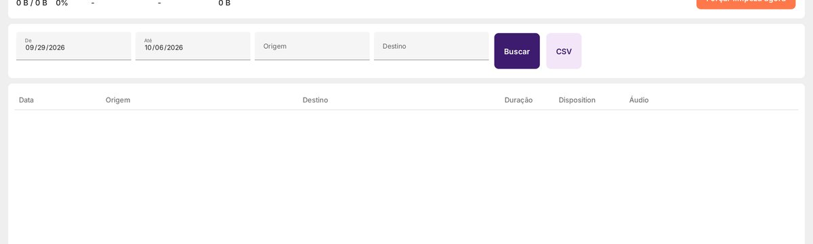
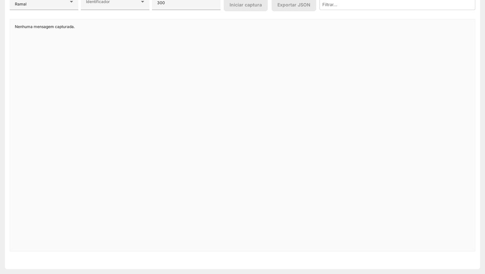

SimplePBX — Guia de Configuração
A trilha na ordem em que o sistema exige — cada peça só aceita apontar para algo que já existe. Campo a campo, com as regras de validação, os valores do exemplo oficial (Clínica Vida Plena) e as armadilhas que fazem a tela dizer “salvo” sem o PABX ter aceitado.
Antes de começar
- Perfil administrador. As telas de telefonia, os grupos de toque, as rotas de entrada e a habilitação de voz no WhatsApp só aparecem por completo para o administrador. O supervisor faz parte das etapas e não conclui a habilitação do WhatsApp.
- Módulo habilitado. Com a telefonia simplificada ativa, o menu Telefonia aparece com: Geral, Ramais, Troncos, Rotas de Entrada, Rotas de Saída, Grupos de Toque, Gravações e Debug SIP.
- Se aparecer “Telefonia indisponível”, pare: é falha do serviço de telefonia (bootstrap/AMI), não de cadastro. Reaplicar configuração ou recarregar a tela não resolve — acione o suporte.
- Dados da operadora em mãos. Endereço do servidor SIP, usuário, senha e o número que deve aparecer como bina. Sem isso não há tronco de operadora.
- Chave de IA (só se houver assistente de voz): Configurações › Geral › aba IA — OpenAI para modelos GPT, Google AI Studio para Gemini. Use Testar chave antes de qualquer diagnóstico.
- Chave de API global. Importar/exportar cadastros e usar a API de telefonia exigem a chave de API global da instância.
- Nada de servidor. O PABX é compartilhado na nuvem e cada empresa enxerga somente os seus cadastros. O que você configura aqui é a sua parte do prédio.
A ordem obrigatória de configuração
- Geral — idioma, política de gravação, limites e IPs confiáveis.
- Ramais — as mesas de cada pessoa (número de quatro dígitos).
- Troncos — a linha que liga o PABX à operadora.
- Rotas de Saída — quais números saem por qual tronco.
- Grupos de Toque — campainha coletiva de uma sala.
- Filas — a sala de espera organizada (tipo Telefonia).
- URA e assistente de voz — o menu de voz e a recepcionista virtual (é a URA que dá número ao assistente).
- Rotas de Entrada — por último: o DID aponta para o que já existe.
O WhatsApp com voz entra depois, na própria fila do canal — ali o sistema cria tronco e rota sozinho (Etapa 11).
O exemplo usado neste guia
Números e nomes da clínica fictícia que percorre as doze etapas:
| Peça | Nome / número | Papel |
|---|---|---|
| Ramal | 1010 Recepção 1 | Webphone embutido (navegador), usuária Ana |
| Ramal | 1011 Recepção 2 | Aparelho externo, sem usuário associado |
| Grupo de toque | 5000 Recepção | Toca no 1010 e no 1011; se ninguém atender, vai para a fila |
| Fila de voz | 4001 Agendamentos | Transborda para o ramal 1011 após 120 s |
| Fila de voz | 4002 Financeiro | Fila com os padrões de fábrica |
| URA | 6100 Boas-vindas | Menu 1/2/3 → 4001, 4002 e 5000 |
| Assistente de IA | Sofia — Clínica Vida Plena | Recepcionista virtual por voz |
| URA do assistente | 6200 URA Sofia | Fila de URA que entrega a chamada à Sofia |
| Tronco | operadora_exemplo | Linha SIP da operadora, bina 1140001000 |
| Rota de entrada | DID 1140001000 | Número principal → URA 6100 |
O caminho de uma ligação
Entender o desenho evita a maior parte dos erros de cadastro. Na entrada, a operadora entrega a chamada ao PABX pelo tronco; a rota de entrada lê o número discado (o DID) e escolhe o destino; o destino atende.
| Peça | No prédio | Função no PABX |
|---|---|---|
| Tronco | O cabo que entra pela portaria | Conecta o PABX à operadora; por ele as chamadas entram e saem |
| Rota de entrada | A recepcionista do térreo | Lê o DID e decide o destino (sem horário) |
| Ramal | A mesa de cada pessoa | Telefone de 4 dígitos atendido por uma pessoa |
| Grupo de toque | A campainha coletiva da sala | Uma ligação, vários ramais tocando |
| Fila | A sala de espera do andar | Espera com música e distribuição por regra; o atendente entra e sai pelo painel |
| URA | A recepcionista eletrônica | Menu de voz que encaminha pela tecla digitada |
| Assistente de IA | A recepcionista virtual | Conversa por voz em tempo real; mora dentro da URA |
| Rota de saída | O porteiro da cancela | Escolhe por qual tronco a ligação sai |
SimplePBX e PABX Fácil: correspondência
Quem vem do servidor Asterisk/FreePBX encontra os mesmos conceitos com outro nome:
| No PABX Fácil (Asterisk/FreePBX) | No SimplePBX |
|---|---|
| Trunk PJSIP (Settings > Trunks) | Telefonia › Troncos |
| Extension (Applications > Extensions) | Telefonia › Ramais |
| Inbound Route | Telefonia › Rotas de Entrada |
| Outbound Route + Dial Patterns | Telefonia › Rotas de Saída (Padrão de discagem) |
| Ring Group | Telefonia › Grupos de Toque |
| Queue | Fila de atendimento do sistema, tipo Telefonia, recebida pelo destino “Fila” |
| IVR / Announcement | Fluxo de Automação e URA + fila de URA (número de discagem), recebida pelo destino “URA” |
| Custom Destination / ARI Bridge | Elementos de automação/URA (não há equivalente direto) |
| SIP Settings (TLS, Codecs, SRTP) | Visão avançada do tronco + Codecs habilitados |
| CDR (Reports > CDR Reports) | Telefonia › Gravações + Relatórios › CDR e Gravações |
| Console/CLI do Asterisk | Telefonia › Debug SIP |
Etapa 1 — Geral: as regras da casa
Vídeo 01 · Conceitos e Geral
Configurações › Telefonia › Geral. Atenção: esta tela não abre página, abre uma janela. No alto o sistema mostra a qual empresa as regras pertencem; abaixo ficam três abas: Geral, Limites e IPs confiáveis. Essas regras valem para todo o PABX da empresa — não pertencem a uma peça só.
Aba Geral: idioma e política de gravação
| Campo | O que controla |
|---|---|
| Idioma padrão dos prompts | Idioma da voz das frases automáticas do PABX (ocupado, caixa postal). Três opções: português, inglês e espanhol. Vale para todos os ramais. |
| Política padrão de gravação | Aplicada quando o ramal, a fila ou o tronco não têm regra própria: gravar todas as chamadas, indiferente (deixa a decisão para as outras regras) ou não gravar por padrão. Em conflito, não gravar pesa mais. |
O botão Salvar idioma e gravação acende quando algo muda. Cada aba salva sozinha: o botão de uma aba não grava o que você mexeu nas outras.
Aba Limites: salvaguardas
Impedem que um problema de aplicação consuma todos os recursos da central. Passe o mouse sobre o campo para ler a explicação e o valor sugerido.
| Campo | O que faz |
|---|---|
| Chamadas simultâneas máximas | Quantas ligações a empresa pode ter ao mesmo tempo; acima disso o PABX recusa a nova. O sistema recalcula esse número a cada ramal criado ou removido — um valor digitado à mão vale só até a próxima mudança de ramais. |
| Duração máxima por chamada (s) | Derruba qualquer ligação que passe do tempo — proteção contra chamadas presas. |
| Tempo máximo em automação (s) | Limita quanto tempo uma ligação pode ficar dentro de uma URA. |
Aba IPs confiáveis
O PABX bane endereços que erram a senha repetidas vezes; os endereços desta lista nunca são banidos. Útil quando vários ramais saem pelo mesmo IP público.
- Digite o Endereço IP — um por vez, sem máscara de rede (com
/24a tela recusa e explica o motivo). - Opcionalmente, uma Descrição (ex.: Matriz).
- Clique em Adicionar. O botão Usar meu IP atual descobre o IP de quem está no painel e preenche o campo.
- O contador Cadastrados mostra quantos endereços já estão na lista — até 256. A tabela traz IP, descrição, quem adicionou e a lixeira.
Aqui não existe botão Salvar: adicionar e remover valem na hora.
Etapa 2 — Ramais
Vídeo 02 · Ramais
Configurações › Telefonia › Ramais. O ramal é a mesa de cada pessoa: um telefone com número de quatro dígitos que funciona como o crachá dela. No caminho da ligação, é a chegada.
A lista de ramais
- Colunas: Número, Nome, Modo, Usuário e Status.
- No topo, o contador Em uso mostra quantos ramais existem e quantos o contrato permite (ex.: 4 de 10).
- Importar/Exportar cadastra vários de uma vez por arquivo — com limite de 1.000 linhas por operação.
- No fim de cada linha: dados de conexão, editar, webhooks de chamada e excluir.
| Status | Significado |
|---|---|
| Online | Há um telefone conectado a este ramal. |
| Offline | Nenhum telefone conectado. |
| Desconhecido | Normal em ramal recém-criado — não é defeito. |
Cadastro campo a campo
| Campo | Regra |
|---|---|
| Número | Sempre quatro dígitos — com três ou cinco a tela não deixa salvar, porque a telefonia só alcança ramais de quatro dígitos. Em dúvida, use Sugerir próximo livre. |
| Senha SIP | A chave do telefone para entrar na central. Já vem forte; pode gerar outra. Manual: 12 a 64 caracteres, misturando letras, números e símbolos (sem espaços nem , : @ \ " ;). A tela mostra a força e recusa sequências comuns. |
| Nome | O que aparece no visor de quem recebe a ligação. |
| Modo | Webphone embutido (dentro do navegador, via WebRTC) ou Aparelho externo (telefone de mesa ou aplicativo softphone). |
| Usuário associado | Quem usa o ramal. Assim a pessoa atende pelo painel e os relatórios mostram quem atendeu. Para equipamentos, deixe em branco. |
| Destino em caso de falha | O que fazer se ligarem direto para este ramal e ele não atender: Encerrar ou enviar a outro ramal, grupo de toque, fila ou URA. |
| Captura de chamadas | Opcional — Grupo de captura (quais ramais este pode capturar) e Grupo deste ramal. Útil para recepções. |
| Política de gravação | O padrão segue a regra geral da empresa. Ver o alerta abaixo: “Nunca gravar” não é absoluto. |
| Visão avançada | Codecs e criptografia. Os padrões já vêm certos por modo — no dia a dia não precisa mexer. |
não gravar > gravar > indiferente, mas a origem que grava vence o “nunca” do ramal de destino.
O ponto de interrogação ao lado de cada campo abre a explicação correspondente.

O outro caminho: associar pela tela Usuários
- Abra Configurações › Usuários e localize a pessoa.
- No campo Ramal SIP, clique em Associar.
- Crie um ramal novo ou escolha um que esteja sem dono.
Exemplo: os dois ramais da recepção
- Ramal 1010 — Recepção 1 (webphone). Adicionar, digite o número, mantenha a senha gerada. Em Usuário associado escolha a Ana — o Nome é preenchido com o nome dela, então troque por Recepção 1. Modo Webphone embutido, destino Encerrar. Adicionar.
- Ramal 1011 — Recepção 2 (aparelho externo). Modo Aparelho externo, usuário em branco. Em Destino em caso de falha, escolha Ramal e o
1010: se a Recepção 2 não atender, a ligação cai na Recepção 1. Adicionar. - Dados de conexão do 1011. Na linha do ramal, o botão de dados de conexão mostra usuário de autenticação, servidor e senha, com botões para copiar. Feche a janela ao terminar: o sistema audita cada exibição da senha.
Cuidados com ramais
- Quatro dígitos, sempre. Com três ou cinco a tela não salva.
- Desconhecido não é defeito. O ramal novo fica assim até um telefone conectar.
- Usuário de autenticação do aparelho externo leva o nome da empresa na frente: use exatamente o que aparece em Dados de conexão.
- Ramal em uso não pode ser excluído. Se ele é destino de uma rota de entrada ou membro de fila/grupo de toque, tire-o de lá primeiro. A exclusão ainda pede a palavra de segurança, que é o próprio número do ramal.
Etapa 3 — Troncos
Vídeo 03 · Troncos
Configurações › Telefonia › Troncos. O tronco é a linha que liga o PABX à operadora: por ele as chamadas chegam de fora e é por ele que elas saem.
A lista de troncos
- Colunas: Nome, Tipo, Host (endereço do servidor da operadora) e Status.
- Tipo = Manual nos troncos que você cadastra.
- Status = Desconhecido é esperado: essa coluna ainda não diz se a linha da operadora funciona. Só uma ligação de teste diz.
- À direita de cada linha: plugue (dados de conexão), lápis (editar) e X (excluir).
- No topo, Importar/Exportar leva a lista de/para uma planilha; Adicionar cria.
Cadastro campo a campo
| Campo | Regra |
|---|---|
| Nome do tronco | Apelido interno: só minúsculas, números, hífen e underline. Se errar, o sistema avisa e sugere o nome certo. Não pode ser trocado depois de criado. |
| Host | Endereço do servidor SIP da operadora. |
| Porta / Transporte | Já vêm com 5060 e UDP. Só mude se a operadora orientar. |
| Direção do registro | Enviar faz o PABX avisar “estou aqui, pode mandar as ligações”. |
| Autenticação | Outbound: é o PABX que prova quem é. Em operadoras tradicionais, deixe registro e autenticação como vêm. |
| Usuário / Senha | Exatamente os que a operadora entregou. O olhinho mostra ou esconde a senha digitada. |
| Caller ID padrão (bina) | Número mostrado nas ligações que saem por este tronco. Opcional, mas a operadora costuma exigir um número da própria conta. Só números. |
| Codecs habilitados | O padrão funciona; garanta que os dois G.711 continuem marcados (G.729 quando a operadora oferece). |
| Política de gravação | Herdar do tenant segue a regra geral da conta; Sempre gravar e Nunca gravar valem só para este tronco. |
| Visão avançada | Identidade do tronco e criptografia do áudio — só se a operadora pedir. |
Exemplo: tronco de operadora
- Adicionar e nome
operadora_exemplo(minúsculas, underline no lugar do espaço). - Host com o endereço do servidor da operadora; porta
5060e transporteUDPcomo estão. - Registro e autenticação: mantenha Enviar e Outbound.
- Usuário e senha da operadora (a senha fica escondida).
- Bina: só os números, sem parênteses nem traço (ex.:
1140001000). - Codecs e gravação como estão → Adicionar. O tronco aparece na lista com Tipo Manual e Status Desconhecido — normal.
Se a operadora pedir o endereço e as portas do seu PABX, clique no plugue: aparecem o nome completo do tronco, o servidor do PABX e as portas.

Tronco do WhatsApp Cloud API
O tronco de voz do WhatsApp oficial não é cadastrado à mão no fluxo normal: ele nasce junto com a habilitação feita na fila do canal (Etapa 11), com o nome wacall seguido do código da fila. O cadastro manual abaixo só se aplica quando o suporte orientar a fazê-lo — e os dados do canal (servidor com sufixo -direct e senha) aparecem no diálogo Configurar telefonia da fila WhatsApp Cloud API.
| Campo | Valor |
|---|---|
| Host (FQDN) | wa.meta.vc |
| Porta / Transporte | 5061 / TLS |
| Direção do registro / Autenticação | Nenhum / Nenhum (a Meta não usa REGISTER nem autenticação SIP tradicional) |
| Caller ID padrão | número do WhatsApp com DDI+DDD (ex.: 5511987654321) |
| Codecs | Opus (voz em banda larga do WhatsApp) |
| Media encryption (avançado) | DTLS-SRTP (par natural do TLS) ou SDES |
| DTMF mode (avançado) | RFC 4733 |
| Tipo de match inbound (avançado) | Padrão (PJSIP global) |

wa.meta.vc, porta 5061, transporte TLS, registro/autenticação Nenhum e codec Opus.
Cuidados com troncos
- O nome não muda depois de criado.
operadora_exemploestá certo; Operadora Exemplo, não. - “Desconhecido” não quer dizer problema — nem que está tudo bem. Faça uma ligação de teste quando a rota de saída estiver pronta.
- O usuário do tronco é único em todo o PABX. Como o PABX é compartilhado, dois clientes não podem usar o mesmo; se for recusado por isso, fale com o suporte.
- Tronco usado por rota de saída não pode ser excluído. Remova a rota primeiro — o aviso pode falar em “número em uso”, mas é isso que acontece. Para excluir, digite o nome do tronco na confirmação.
- Tronco sozinho não faz ligação sair. Quem decide quais números usam o tronco é a rota de saída.
Etapa 4 — Rotas de saída
Vídeo 04 · Rotas de saída
Configurações › Telefonia › Rotas de Saída. A rota de saída é o porteiro da cancela: olha o número discado e decide por qual tronco a ligação sai.
A lista e os campos
A lista mostra a descrição, o padrão de discagem, o tronco usado e o estado. Importar e Exportar trabalham com planilhas; Adicionar cria uma rota.
| Campo | Regra |
|---|---|
| Descrição | Nome livre, só para reconhecer a rota (ex.: Saída Nacional, Saída Celular). |
| Padrão de discagem | Um molde: só os números que couberem nele saem por esta rota. Começa sempre com sublinhado _. |
| Tronco | Um único tronco por rota. Se a lista estiver vazia, cadastre o tronco primeiro. |
| Política de gravação | Segue a regra geral, ou força Sempre gravar / Nunca gravar nesta rota. |
A gramática do padrão de discagem
| Símbolo | Significa |
|---|---|
_ | Prefixo obrigatório do padrão. |
X | Qualquer dígito, de 0 a 9. |
[1-9] | Um dígito dentro da faixa indicada. |
. | Curinga de tamanho livre. |
N | Equivalente a [2-9] nos padrões no estilo Asterisk. |
_X. é recusado pela tela — ele aceitaria até o número de uma fila interna.
Os exemplos exibidos logo abaixo do campo servem para entender a escrita, mas não funcionam para o DDD 11. E não comece o padrão por zero.
Visão avançada
| Campo | Efeito |
|---|---|
| Strip | Tira dígitos do começo do número antes de enviar à operadora. |
| Prepend | Acrescenta dígitos na frente — como o 55 do Brasil. |
| CallerID override | Troca a bina mostrada a quem recebe. Vazio = vale a bina do tronco. Só números (com parênteses e traço a tela avisa). |
| Tag de contexto | Para automações avançadas — deixe em branco. |
| Rota ativa | Apenas uma marcação: desmarcar não desliga a rota. Para parar de usar, exclua. |
Exemplo: fixo e celular
- Saída Nacional (fixos). Descrição Saída Nacional. Padrão: sublinhado, duas casas de 1 a 9 (o DDD) e oito
X→_[1-9][1-9]XXXXXXXX, dez dígitos. Se aparecer um aviso laranja, ele some quando o padrão fica completo. - Tronco
operadora_exemplo; gravação e visão avançada como estão (a bina do tronco já serve) → Adicionar. A mensagem Rota salva confirma e a rota entra no fim da lista. - Saída Celular. O celular tem um dígito a mais (o nove):
_[1-9][1-9]9XXXXXXXX, onze dígitos, mesmo tronco → Adicionar.
Na prática: fixo com DDD sai pela Saída Nacional, celular sai pela Saída Celular, as duas pelo mesmo tronco. Os dois padrões esperam o número com DDD.

_ e o tronco de saída. Cada rota usa um único tronco.Cuidados com rotas de saída
- Padrão com curinga exige 4+ dígitos.
_X.é recusado. - Sem DDD não sai. Oriente a equipe a discar sempre com DDD; números curtos como
190precisam de uma rota própria. - Um tronco por rota, sem plano B. Se o tronco falhar, a ligação não desvia sozinha para outro.
- Rota ativa não desliga nada. Para parar de usar, exclua.
- Editar recria a rota. Se aparecer Rota de saída perdida, é só cadastrar de novo.
Etapa 5 — Grupos de toque
Vídeo 05 · Grupos de toque
Configurações › Telefonia › Grupos de Toque — só o administrador enxerga este menu. O grupo é a campainha coletiva de uma sala: uma ligação, vários ramais tocando. Ele tem número próprio, é um destino possível da rota de entrada ou da URA, e um ramal também pode discá-lo.
Cadastro campo a campo
| Campo | Regra |
|---|---|
| Número | O que se disca para chamar o grupo: 3 a 8 dígitos. Divide o mesmo espaço dos ramais, filas e URAs — não pode repetir nenhum deles. |
| Nome | Rótulo para listas e relatórios. Ninguém disca o nome. |
| Estratégia | Tocar em todos (todos ao mesmo tempo; quem atender primeiro fica), Sequencial (um de cada vez, na ordem da lista) ou Memória (rodízio que lembra onde parou). Há Aleatório, mas prefira uma das três primeiras: o comportamento é previsível. |
| Tempo de toque | Quantos segundos o grupo chama antes de desistir: mínimo 5, máximo 600. Entre 20 e 30 s costuma funcionar bem. |
| Membros | Clique na linha do ramal para marcar. Dá para buscar por número ou nome e marcar/desmarcar todos os visíveis. |
| Ordem de toque | Só faz diferença no Sequencial e na Memória (setinhas para subir/descer). No tocar em todos, a ordem não muda nada. |
| Destino se ninguém atender | Encerrar desliga; as outras opções mandam a ligação a um ramal, outro grupo, uma fila ou uma URA. |
| Política de gravação | Neste cadastro já vem Sempre gravar. Há também Herdar do tenant e Nunca gravar — confirme a regra da empresa antes de mudar. |
Exemplo: grupo 5000 Recepção
- Número
5000, Nome Recepção. - Estratégia Tocar em todos — os dois telefones da recepção tocam juntos.
- Tempo de toque
20segundos. - Membros: busque e marque o
1010e o1011; o contador mostra dois selecionados. - Destino se ninguém atender: tipo Fila → fila Agendamentos. Assim ninguém fica sem resposta.
- Adicionar → Grupo salvo; o grupo já pode ser escolhido como destino numa rota de entrada.

Cuidados com grupos de toque
- Botão Adicionar cinza? Confira o número (3–8 dígitos) e o tempo de toque (5–600 s).
- No Sequencial e na Memória o tempo de toque vale por ramal. Três ramais com 20 s podem levar até um minuto para o grupo desistir.
- O destino padrão é Encerrar — derruba a ligação. Escolha sempre para onde ela deve ir.
- Dentro do grupo vale o destino do grupo, não o do ramal.
- A gravação já vem em Sempre gravar, diferente de outras telas que seguem a regra geral.
Etapa 6 — Filas de atendimento de voz
Vídeo 06 · Filas
Configurações › Filas. A fila é a sala de espera organizada: se todos os atendentes estão ocupados, o cliente aguarda ouvindo música e a central chama quem ficar livre, seguindo a regra escolhida. Diferente do grupo de toque (membros fixos), aqui o atendente entra e sai pelo painel.
Criar a fila
- Adicionar → Nome da fila (o que atendentes e supervisores veem).
- Tipo: cuidado, a lista começa em WhatsApp e a opção de voz fica no final. Escolha Telefonia › Fila de atendimento (Telefonia › URA é o menu de voz — Etapa 7).
- Número da fila: o número interno pelo qual a rota de entrada, a URA e as transferências chamam a fila. Não pode repetir ramal, grupo ou outra fila — e o botão Adicionar só acende quando o número está preenchido.
- Confirme. A fila aparece na lista com o selo Telefone e o número. Em Servidor mostra Desabilitado: normal, esse interruptor só é usado nas filas de URA.
O número da fila não muda depois de criada. Se errar, exclua a fila e crie de novo.
Aba Configurações
| Campo | Opções / efeito |
|---|---|
| Estratégia | Tocar em todos (todos os livres ao mesmo tempo), Menos recente (quem está há mais tempo sem atender), Menos chamadas (quem atendeu menos), Aleatório, Round-robin com memória (rodízio lembrando quem atendeu por último). |
| Música em espera | Padrão usa a música da central. Para a da empresa, envie o áudio à Galeria de arquivos marcando Enviar para o PABX. |
| Política de gravação | Gravar, Não gravar ou Herdar (segue a regra geral). |
| Tempo máximo de espera | Segundos na fila antes de sair; zero = sem limite. |
| Máximo de chamadas em espera | Com a fila cheia, quem ligar não entra nela. |
| Tempo de toque por agente | Quantos segundos o telefone do atendente toca. |
| Intervalo entre tentativas | Espera antes de chamar o mesmo atendente de novo. |
| Pausa pós-atendimento | Descanso entre uma ligação e outra (ex.: 10 s). |
| Transbordo | Para onde vai a chamada que sai da fila sem ser atendida (tempo esgotado ou fila cheia): Encerrar a chamada (padrão), Ramal, Grupo de toque, Outra fila ou URA. |
| Ramais fixos | Ramais que ficam sempre na fila, sem login nem logout. |
Exemplo: Agendamentos (4001) e Financeiro (4002)
- Agendamentos, tipo Telefonia › Fila de atendimento, número
4001. - Na aba Configurações: estratégia Round-robin com memória, gravação Gravar, tempo máximo de espera 120 s, máximo de chamadas em espera 10, pausa pós-atendimento 10 s.
- Transbordo: tipo Ramal, destino
1011(recepção) — quem esperar mais de dois minutos é encaminhado. Sem transbordo, a chamada é encerrada. - Nenhum ramal fixo marcado: o atendente entra pelo painel. Salvar.
- Financeiro, número
4002, com os padrões de fábrica (já nasce em rodízio).
Vincular o atendente e entrar na fila
- Configurações › Usuários → abra a pessoa → aba Filas e Atendimento → campo Filas → escolha Agendamentos → Salvar.
- Conferir na central: abra Rotas de Entrada › Adicionar, escolha o tipo de destino Fila e veja se as duas aparecem na lista. Se não aparecerem, a central não recebeu o cadastro.
- No painel do atendente: o cartão Ramal mostra Disponível quando o telefone do painel está conectado. A fila aparece como Deslogado — clique nela e confirme em Logar. Para sair, clique de novo e confirme em Deslogar.
Cuidados com filas
- Número imutável. Errar o número obriga a excluir e recriar a fila.
- Sem transbordo, a chamada morre. Tempo esgotado ou fila cheia sem destino = chamada encerrada.
- O aviso verde de sucesso nem sempre garante a central. Se ela recusar o número, a tela pode mostrar sucesso mesmo assim — confira na lista de destinos da rota de entrada.
- Ramais fixos só existem em filas de telefonia e a fila precisa ter número no PABX.
Etapa 7 — URA telefônica (duas peças)
Vídeo 07 · URA telefônica
A URA é a recepcionista eletrônica do térreo: atende, toca uma mensagem e, conforme a tecla digitada, encaminha para o andar certo. No sistema ela é feita de duas peças — e as duas são obrigatórias:
| Peça | Onde fica | O que faz |
|---|---|---|
| Fluxo (Ura avançada) | Configurações › Automação › Fluxo de Automação e URA | O roteiro: cartões de áudio, espera, condição e transferência |
| Fila de URA | Configurações › Filas › tipo Telefonia (URA) | Dá ao roteiro um número de discagem e liga o servidor |
Fluxo sem fila de URA não atende ninguém.
Passo 1: o áudio na galeria
- Configurações › Cadastros › Galeria de arquivos › Adicionar › Gerar áudio com IA.
- Dê um Título e escreva o Texto que a URA vai falar. Provedor, modelo e voz já vêm preenchidos.
- Gerar prévia e ouça antes de salvar.
- Ligue a chave Enviar para o PABX — é isso que deixa o áudio disponível para a URA — e Salvar.
- Repita para o aviso de opção inválida. Na lista, o visto verde Enviado ao PABX mostra o que já está lá.
Passo 2: o fluxo no editor visual
Em Fluxo de Automação e URA, a lista mostra URAs de chat, automações e as URAs de telefonia (selo URA Telefonia). Na coluna Funções, o primeiro botão abre o editor; os outros mostram histórico, clonam, exportam e excluem. Adicionar pede nome e tipo (ex.: Ura avançada (Telefonia)) e cria um fluxo vazio — o desenho vem depois.
No editor, o triângulo verde é o Início; cada cartão é um passo; as setas mostram o caminho. A barra de cima traz os elementos, agrupados:
| Grupo | Elementos | Uso no menu de voz |
|---|---|---|
| Telefone | Tocar áudio, Aguardar interação, Transferir chamada, Encerrar chamada | O corpo da URA |
| Estrela (IA) | Assistente, Gerar áudio com IA | Recepcionista virtual; voz gerada por chamada |
| Lógica | Laço de repetição, Condição de variável | Repetir o menu e ramificar pela tecla |
Passe o mouse sobre um cartão para editar, clonar ou remover. O triângulo laranja é um passo sem configurar; a bolinha na borda direita é a saída, que você arrasta até o próximo cartão. No canto ficam Salvar (verde) e Fechar (vermelho, descarta o que não foi salvo).
O roteiro do exemplo (URA Boas-vindas):
- Laço de repetição: Repetir um número de vezes,
3. O Início liga ao laço. - Tocar áudio: arquivo Boas-vindas da galeria; ligue Parar áudio se o usuário digitar algo. A saída Repetir do laço liga a este cartão.
- Aguardar interação do usuário:
10segundos de espera pela tecla. O fluxo segue quando o cliente digita ou quando o tempo acaba. - Condição de variável: em Conteúdo para comparação escreva
{{call_digits}}— a variável da tecla digitada, já pronta no sistema. Crie três ramos e troque Nova condição por1,2e3. O ramo Padrão pega qualquer outra tecla (ou nenhuma). - Transferir chamada em cada ramo — sempre pelo número, nunca pelo nome:
4001,4002e5000. - No ramo Padrão: outro Tocar áudio com o aviso Opção inválida, devolvendo a saída ao Laço de repetição — assim o menu toca de novo. Quando as três tentativas acabam, o laço sai por Concluído: ligue a um Transferir chamada para a recepção (
5000). - Sem nenhum triângulo laranja, Salvar e fechar o editor.
Só vale destino interno: ramal, fila, grupo de toque ou outra URA.
Passo 3: a fila de URA
- Configurações › Filas › Adicionar, nome URA Boas-vindas, tipo Telefonia (URA). Aqui não há campo de número: ele vem depois.
- Expanda a linha e, na aba Conexão, ligue Habilitar Servidor — é o que coloca a URA no ar.
- Na aba Configurações: Número de discagem
6100(3 a 8 dígitos) e o fluxo Boas-vindas. Salvar.
Cuidados com URAs
- São duas peças. O fluxo sozinho não atende: falta a fila de URA com número, fluxo e Habilitar Servidor ligado.
- O número de discagem falha em silêncio. Use 3–8 dígitos sem repetir outro número da telefonia; se repetir, a tela diz que salvou e nada acontece.
- O Tocar áudio só lista arquivos enviados ao PABX. Sem marcar Enviar para o PABX na galeria, a lista fica vazia.
- Dê limite ao menu repetido. Laço com poucas voltas e uma saída para a recepção; ligar o Padrão direto ao áudio prende quem não digita.
Etapa 8 — Assistente de IA por voz
Vídeo 08 · Assistente de IA por voz
O assistente é a recepcionista virtual da portaria: escuta o cliente, responde em português na hora e consulta o que a empresa ensinou. Ele precisa de quatro peças: voz (modelo que fala e escuta), memória (regras da casa), saída (transferir ou encerrar) e tempo máximo de conversa.
Antes: a chave de IA
Configurações › Geral › aba IA. Ali ficam as chaves dos provedores — OpenAI (modelos GPT) e Google AI Studio (modelos Gemini). Ficam ocultas, e o botão Testar chave confirma se funcionam. Sem chave válida o assistente atende, mas fica mudo.
A lista de assistentes
Configurações › Assistentes. Cada linha mostra ID, Tipo (modelo de texto), Nome e Sucesso. Na coluna Funções: perguntas não respondidas, últimos atendimentos, estatísticas, configuração e exclusão.
O editor, campo a campo
| Aba / campo | O que faz |
|---|---|
| Geral › Nome do assistente | Organização na lista — a IA não usa. |
| Geral › Assinatura | Vale só para o chat. |
| Geral › Modelo de IA | O modelo de texto, que ajuda nas consultas durante a ligação. |
| Geral › Contexto inicial | O mais importante: quem ele é, como deve falar e quando transferir. Vale para voz e chat. |
| Geral › Marcadores de saída | Os motivos que ele pode informar ao transferir — a URA pode usar esse motivo. Digite cada um sem espaços e confirme com Enter (ex.: falar-com-recepcao). |
| Realtime › Modelo Realtime | O modelo que escuta e fala (Google ou OpenAI) — é outro campo, separado do Modelo de IA. |
| Realtime › Voz | O timbre. A lista separa femininas e masculinas, cada uma com estilo (Calorosa, Suave, Firme). Todas falam português do Brasil. |
| Realtime › Duração máxima | Limite da conversa em segundos. Quando acaba, a ligação é transferida, sem despedida. |
| Realtime › Iniciar conversa proativamente | Faz o assistente falar primeiro, assim que a ligação é atendida. |
| Realtime › Introdução | A frase de abertura, dita exatamente como escrita — use para o nome da empresa e o aviso de gravação. |
| Realtime › Resultado ao transferir / ao encerrar | Marcam o desfecho como Neutro, Sucesso ou Falha, para os relatórios. |
| Conhecimento | Liga a base de conhecimento da empresa. |
| Funções | Libera ações extras. |
| Testar | Chat de texto com a última versão salva. Não testa a voz. |
Exemplo: Sofia
- Adicionar › Criar; abra a engrenagem do Novo assistente.
- Nome: Sofia - Clínica Vida Plena. Assinatura: Sofia.
- Contexto inicial: fala em português com frases curtas, ajuda a agendar consultas, consulta a base de conhecimento e transfere quando o cliente pedir uma pessoa ou falar de pagamento.
- Marcadores de saída:
falar-com-recepcao,agendamento-concluido,assunto-financeiro,fora-do-escopo. - Modelo Realtime: Gemini 3.8 live (o padrão de um assistente novo é outro, mais antigo). Voz: Sulafat (feminina, calorosa). Duração máxima:
300s. - Ligue Iniciar conversa proativamente e escreva a Introdução: nome da clínica, quem é a Sofia, aviso de gravação e a pergunta “como posso ajudar?”.
- Salvar. A Sofia já conversa — mas ainda não atende ligações: falta conectá-la a uma URA.
Cuidados com assistentes
- Confira os padrões. Todo assistente novo nasce com o primeiro modelo da lista (mais antigo) e apenas 120 segundos de conversa.
- Escolha o modelo antes da voz — trocar de modelo pode mudar a voz.
- A aba Testar é chat de texto e não testa a voz. Para ouvir, só ligando.
- Sem conversa proativa ele espera o cliente falar primeiro; sem Introdução a saudação muda a cada ligação e o aviso de gravação não é garantido.
- Sem chave válida ele não fala. Antes de investigar o fluxo, use Testar chave.
Etapa 9 — Conectar o assistente à telefonia
Vídeo 09 · Conectar o assistente
O assistente não atende sozinho: a ligação precisa chegar até ele. O caminho é sempre o mesmo — e o assistente mora dentro de uma URA.
Montagem, passo a passo
- Confira a chave de IA (Configurações › Geral › IA) com Testar chave. A Sofia usa modelo do Google → vale a chave do Google AI Studio.
- O assistente precisa existir com a voz configurada (Etapa 8).
- Fluxo: Configurações › Automação › Fluxo de Automação e URA › Adicionar → nome Atendimento Sofia, tipo Ura avançada (Telefonia) → Configurar fluxo.
- No menu das estrelas, escolha Assistente. Ele já nasce com as duas saídas (Encerrado e Transferido). Edite e escolha a Sofia; Aplicar. Ligue o Início ao Assistente.
- Saída Encerrado → elemento Encerrar chamada (motivo atendimento concluído).
- Saída Transferido → Transferir chamada com número
5000(grupo de toque da Recepção). - Sem triângulo laranja, Salvar e fechar.
- Fila de URA: Filas › Adicionar → URA Sofia, tipo Telefonia (URA). Ligue Habilitar Servidor; em Configurações, Número de discagem
6200e o fluxo Atendimento Sofia. Salvar. - Rota de entrada: Adicionar → DID do número da Sofia, tipo de destino URA, destino URA Sofia.
Teste
- No painel de um atendente com ramal webphone Disponível, disque o número da fila de URA —
6200— e não o DID da empresa. - A Sofia deve atender, apresentar-se, avisar da gravação e, ao pedido de “falar com a recepção”, transferir: o telefone da recepção toca.
- Só depois de o teste passar é que o DID da empresa deve apontar para o assistente.
Cuidados ao conectar
- A ordem importa: chave de IA → assistente → fluxo → fila de URA com servidor ligado → e só no fim a rota de entrada, que só aceita uma URA que já existe.
- O assistente não desliga nem transfere sozinho. Quem faz isso são os elementos ligados às saídas.
- Três relógios contam o tempo e vale o menor: a Duração máxima do assistente, o Tempo máximo em automação do PABX e a Duração máxima por chamada. Estourou o do assistente, ela é transferida sem despedida.
- Ligação muda não é defeito do fluxo. Comece pela chave (Testar chave) e ligue a conversa proativa com Introdução.
Etapa 10 — Rotas de entrada
Vídeo 10 · Rotas de entrada
Configurações › Telefonia › Rotas de Entrada — só o administrador vê o menu. A rota lê o número que o cliente discou — o DID — e consulta a lista: este número vai para tal destino.
A lista
- Colunas: DID, Descrição, Destino e Estado (ativa/inativa).
- A coluna Prioridade mostra a posição de cada rota; as setas mudam a posição, mas a nova ordem só vale depois de clicar em Publicar nova ordenação. Descartar volta atrás.
- Como cada número tem uma só rota, não há disputa entre rotas: quem atende a ligação é a rota do número discado.
Cadastro campo a campo
| Campo | Regra |
|---|---|
| DID | O número que o cliente discou, do jeito que a operadora entrega: só números, sem espaço, parênteses ou traço. Pode ser o número completo com DDD ou só o final, conforme a operadora — na dúvida, pergunte a ela. Não muda depois de salvo (aparece com cadeado ao editar). |
| Descrição | Nome fácil de reconhecer. Só aparece nas listas; não muda o caminho da ligação. |
| Tipo de destino | Ramal, Fila, Grupo de toque, URA ou Desligar (encerra na hora — útil para bloquear um número). |
| Destino | A segunda lista traz os destinos daquele tipo que já existem, com o número entre parênteses. Lista vazia = cadastre o destino primeiro (a tela avisa que não há destino daquele tipo). |
| Política de gravação | Herdar do tenant segue a regra geral da empresa; Sempre gravar e Nunca gravar valem para este número. |
| Visão avançada › Filtro de CallerID | Faz a rota valer só para ligações de certos números; quem liga de outro número não entra nela. |
| Visão avançada › Rota ativa | Apenas organização: desmarcar não faz o número parar de atender. Para isso, só excluindo a rota. |
Exemplo: o número principal
- DID:
1140001000(só números). - Descrição: Número principal da clínica.
- Tipo de destino: URA → destino Boas-vindas,
6100. - Política de gravação: Herdar do tenant.
- Adicionar → Rota salva; a rota entra no fim da lista, Ativa. Faça uma ligação de teste.

Cuidados com rotas de entrada
- Cada número tem uma só rota. Uma segunda rota para o mesmo DID — mesmo com filtro de CallerID — é recusada com Número em uso. Errou o número? Exclua a rota e crie outra.
- Destino novo não aparece na lista? A tela guarda essa lista no navegador por 30 segundos. Aguarde meio minuto ou recarregue com F5 e abra a tela de novo.
- Desmarcar Rota ativa não desliga o número. Exclua a rota.
- Mudar destino ou filtro recria a rota por trás dos panos. Se aparecer aviso de rota perdida, cadastre de novo.
- A rota de entrada não conhece horário. O fora do expediente se resolve dentro da URA, com o elemento de verificação de horário de atendimento.
Etapa 11 — Chamadas de voz do WhatsApp
Vídeo 11 · WhatsApp com voz
O WhatsApp da empresa ganha uma linha telefônica escondida no PABX, criada sozinha pelo sistema com um clique. Ao habilitar, ele liga as chamadas na Meta, cria o tronco e cria a rota de entrada. Você só escolhe o destino.
Habilitar, passo a passo
- Configurações › Filas, como administrador. Abra o filtro da coluna Tipo e escolha WA Cloud API.
- Clique na setinha à esquerda e abra a fila. Na aba Conexão está o botão Configurar telefonia (ao lado, Verificar saúde do número).
- O diálogo Configuração de Telefonia pergunta à Meta como o número está e mostra três indicadores: Status da Telefonia (chamadas habilitadas?), Visibilidade do Ícone de Chamada (o botão de telefone aparece para o cliente?) e SIP Habilitado (a Meta já entrega as ligações ao PABX?).
- Clique em Habilitar Telefonia e escolha o Destino padrão — toda ligação que chegar a este WhatsApp vai para ele (depois dá para mudar editando a rota). Tipos: Ramal, Fila, Grupo de toque, URA (menu ou assistente) e Desligar (bloqueia chamadas).
- Confirmar e habilitar só funciona com um destino escolhido. Acompanhe as etapas na tela — habilitar na Meta, buscar credenciais (pode levar alguns segundos), cadastrar o tronco e criar a rota — e não feche a janela até acabar.
- Ao final: Telefonia habilitada e roteada com sucesso; status Habilitada, ícone Visível e SIP habilitado.
Conferência obrigatória
- Telefonia › Troncos: existe um tronco chamado
wacallseguido do código da fila. Ele só nasce por este botão; o status Desconhecido é esperado, porque esse tronco não usa registro. - Telefonia › Rotas de Entrada: procure WhatsApp Cloud API seguido do número. O destino é o que você escolheu — para mudar, edite esta rota.
Desabilitar Telefonia fica no mesmo diálogo. Por segurança, o sistema pede que você digite o número do WhatsApp; só então desliga na Meta e apaga o tronco e a rota.
Cuidados
- O aviso verde não prova que deu tudo certo. Se uma etapa falhar depois de ligar na Meta, ele continua aparecendo — confira sempre Troncos e Rotas de Entrada.
- Só o administrador conclui. O supervisor liga a chamada na Meta, mas não cria o tronco nem a rota.
- As regras são da Meta. O número precisa ser oficial, fora do modo Coexistence, com limite diário liberado e pagamento válido; o portfólio empresarial no Meta Business precisa estar verificado. Recusa da Meta aparece na tela.
- Cadastre o destino antes. Lista de destino vazia = cadastre primeiro o recurso (a URA, a fila etc.).
- Número em uso significa que já existe uma rota para ele.
Etapa 12 — Gravações e Debug SIP
Vídeo 12 · Acompanhamento
Telefonia › Gravações mostra o uso da cota, a próxima e a última execução da limpeza automática, os bytes liberados e o botão Forçar limpeza agora. Abaixo, a lista por período com Data, Origem, Destino, Duração, Disposition e Áudio (player e download).

Telefonia › Debug SIP captura o tráfego SIP para investigar registro e chamada e permite Exportar JSON — equivale a ligar o logger do Asterisk, mas pela interface.

Conferência final
- Geral: idioma e política de gravação salvos na aba certa; limites revisados; IPs confiáveis só de endereços conhecidos.
- Ramais: 4 dígitos, senha forte, modo correto, usuário associado (vazio nos aparelhos) e destino em caso de falha.
- Troncos: nome válido e imutável, host/porta/transporte, usuário e senha da operadora, bina só com números, G.711 marcados.
- Rotas de saída: padrão começando por
_, curinga com 4+ dígitos, um tronco, e uma ligação de teste feita. - Grupos de toque: número de 3–8 dígitos sem colisão, tempo de toque, membros e destino se ninguém atender.
- Filas: tipo Telefonia › Fila de atendimento, número, estratégia, tempos e transbordo definido.
- URA: fluxo salvo sem triângulo laranja + fila de URA com número e Habilitar Servidor ligado + áudios Enviados ao PABX.
- Assistente (se houver): chave testada, modelo Realtime definido antes da voz, duração máxima, proativa e Introdução, e as duas saídas ligadas.
- Rotas de entrada: DID só com números, destino existente, ordem publicada e ligação de teste concluída.
- WhatsApp (se houver): tronco
wacalle rota WhatsApp Cloud API presentes.
Erros comuns ao configurar
| Sintoma | Causa provável / correção |
|---|---|
| Ramal não salva | Número com 3 ou 5 dígitos — use sempre quatro. |
| Ramal novo em Desconhecido | Normal: nenhum telefone conectou ainda. |
| Não consegue excluir o ramal | Ele é destino de rota ou membro de fila/grupo. Remova dessas listas primeiro. A confirmação pede o número do ramal. |
| Senha SIP fraca (recusa ao salvar) | Use 12–64 caracteres com letras, números e símbolos, sem sequências comuns. |
| “Nenhum tronco cadastrado” na rota de saída | Cadastre o tronco antes (Etapa 3). |
| Nome de tronco recusado | Só minúsculas, números, hífen e underline — e não muda depois de criado. |
| Tronco não pode ser excluído (“número em uso”) | Uma rota de saída usa este tronco. Exclua a rota primeiro. |
| Padrão de discagem recusado | Falta o sublinhado inicial ou o curinga não exige 4 dígitos. |
| Ligação externa não sai | Discou sem DDD; número curto (190) precisa de rota própria; ou a rota não existe mais (editar recria). |
| Botão Adicionar do grupo de toque cinza | Número fora de 3–8 dígitos ou tempo de toque fora de 5–600 s. |
| Grupo demora mais que o tempo configurado | Sequencial/Memória multiplicam o tempo por ramal. |
| Fila não aparece nos destinos da rota | O número colidiu com outro da telefonia (a tela pode ter dito “salvo”); recrie a fila com número livre. |
| Atendente não recebe chamada | Falta vínculo com a fila, login na fila ou ramal Disponível no painel. |
| URA não atende / silêncio | Falta a fila de URA com Habilitar Servidor, ou o número de discagem está repetido, ou o áudio não foi enviado ao PABX. |
| Assistente atende mudo | Chave de IA inválida (Testar chave) ou conversa proativa/Introdução desligadas. |
| Assistente não transfere | Saída Transferido sem elemento de transferência ligado — saída solta não tem desfecho. |
| DID recusado como “Número em uso” | Já existe rota para o número, mesmo que com filtro de CallerID. |
| Destino novo não aparece na rota | Cache de 30 s no navegador: aguarde ou recarregue com F5. |
| “Telefonia habilitada” mas o WhatsApp não toca | Confira o tronco wacall e a rota WhatsApp Cloud API; o aviso verde aparece mesmo se uma etapa falhar depois da Meta. |
| “Telefonia indisponível” em todas as telas | Serviço de telefonia fora do ar (bootstrap/AMI) — acione o suporte. |
| “Volume excedido (limite 1000 linhas)” ao importar | Divida o arquivo em lotes de até 1.000 linhas; remova colunas tenant*. |
Origem do material
Este guia foi consolidado a partir da trilha oficial em vídeo do SimplePBX (transcrita de legendas .srt/.vtt), que percorre a configuração completa numa clínica fictícia:
| # | Tema | Cobre |
|---|---|---|
| 01 | Conceitos de telefonia | PABX compartilhado, caminho da ligação, as peças, ordem de configuração, regras da casa (Geral) |
| 02 | Ramais | Lista, status, cadastro campo a campo, dados de conexão, exclusão e armadilhas |
| 03 | Troncos | Registro/autenticação, codecs, bina, nome imutável, dados de conexão |
| 04 | Rotas de saída | Gramática do padrão, regra do curinga, strip/prepend/callerID, rota ativa |
| 05 | Grupos de toque | Número compartilhado, estratégias, tempo de toque, membros e destino |
| 06 | Filas | Tipo Telefonia, número, estratégias, tempos, transbordo, vínculo e login do atendente |
| 07 | URA telefônica | Áudio na galeria, editor visual, laço e condição, fila de URA e número de discagem |
| 08 | Assistente de IA por voz | Chave de IA, editor do assistente, modelo Realtime, voz, duração e introdução |
| 09 | Conectar o assistente | Elemento Assistente, saídas Encerrado/Transferido, fila de URA, teste por ramal |
| 10 | Rotas de entrada | DID, destinos, prioridade/publicação da ordem, filtro de CallerID, cache de 30 s |
| 11 | WhatsApp com voz | Habilitar telefonia na fila Cloud API, tronco wacall, rota automática, regras da Meta |
| 12 | Geral (detalhe) | Abas Geral, Limites e IPs confiáveis — idioma, gravação, salvaguardas e banimento |